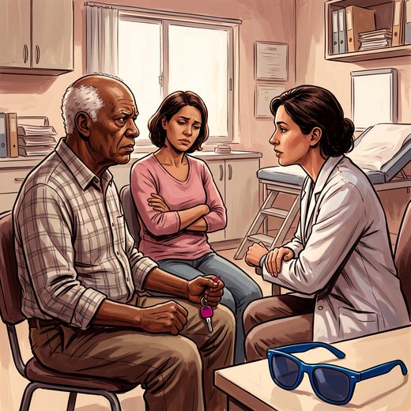

Consulta rápida à beira do leito
Condutas, doses e interações.
Referências da aula · 3
- Pomidor A, editor. Clinician's Guide to Assessing and Counseling Older Drivers. 4th ed. New York: American Geriatrics Society; 2019.
- Brasil. Lei nº 14.071, de 13 de outubro de 2020. Altera o Código de Trânsito Brasileiro. Diário Oficial da União, Brasília, 2020.
- Freitas EV, Py L, organizadores. Tratado de Geriatria e Gerontologia. 5ª ed. Rio de Janeiro: Guanabara Koogan; 2022.